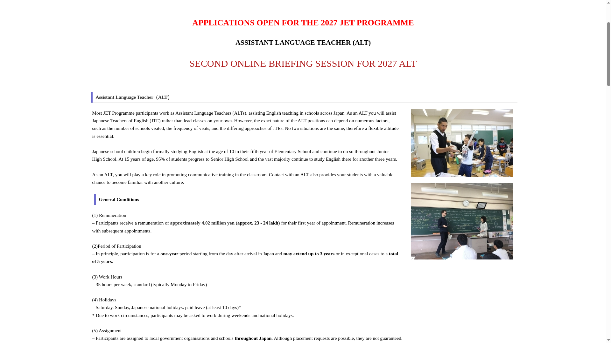
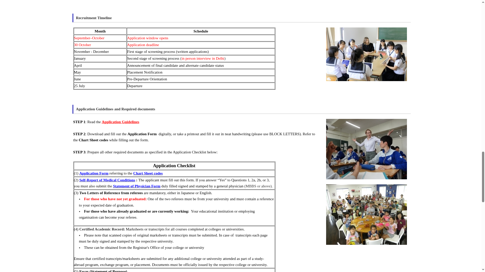
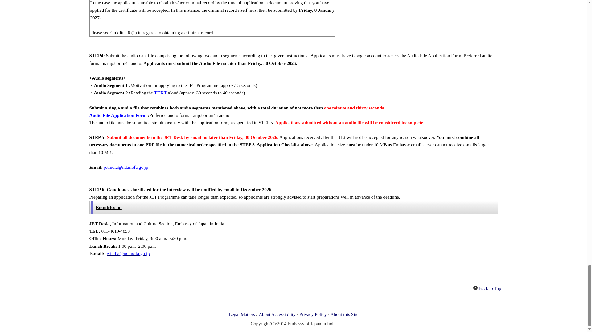

JET Programme 2027: teach English in Japan on about ₹23-24 lakh a year, apply by 30 October
The Japan Exchange and Teaching (JET) Programme is a Japanese government scheme that places graduates from other countries in Japanese schools and local government offices. The Embassy of Japan in India is now accepting applications for the 2027 Assistant Language Teacher (ALT) intake. You do not need to know Japanese. First-year pay is about 4.02 million yen, roughly ₹23-24 lakh, and the flight to Japan is paid for. Everything must reach the embassy by email on or before Friday, 30 October 2026.
What is the JET Programme?
JET is run by Japan's local authorities together with three national ministries and the Council of Local Authorities for International Relations (CLAIR). It started in 1987 and has placed over 80,000 people from 82 countries. As an ALT you assist Japanese Teachers of English in elementary, junior high or senior high schools - preparing teaching materials, helping in class, running English clubs and joining cultural exchange activities. You are employed by a local government organisation or school, not by a private company.
What does it pay?
| Year 1 | About ¥4,020,000 (about ₹23-24 lakh) |
|---|---|
| Year 2 | About ¥4,140,000 |
| Year 3 | About ¥4,260,000 |
| Years 4-5 | About ¥4,320,000 a year, only for participants rated outstanding |
Paid monthly. Japanese income tax, residence tax, health insurance and pension contributions are deducted from it, and the guidelines say the amount is enough to cover average living expenses in Japan. Your flight from India to Japan is paid by the contracting organisation that hires you. Work hours are about 35 a week, usually Monday to Friday, with Saturdays, Sundays, Japanese national holidays and at least 10 days of paid leave.
Who can apply?
| Nationality | Indian passport holder. |
|---|---|
| Education | Bachelor's degree in any subject by July 2027. Final-year students can apply with a certificate of expected graduation. |
| English | Excellent English with clear, standard pronunciation - this is tested through a compulsory audio recording. |
| Japanese | NOT required for ALT. Japanese ability (like a JLPT certificate) only adds extra points. |
| Age | No age limit in the official guidelines. |
| Health | Mentally and physically healthy; a medical self-report form is part of the application. |
| Other | Not have lived in Japan for 6 or more years in total since 2017; not have been on JET since March 2024 or for more than 6 years in total; no serious criminal record. |
What adds extra points?
A degree in English or Education, a teaching licence or classroom experience, TEFL/TESOL certificates, Japanese language background (JLPT), and experience of travelling or living abroad. None of these are compulsory.
Recruitment timeline
| 30 October 2026 | Application deadline (all documents by email) |
|---|---|
| November-December 2026 | First screening of written applications; shortlisted candidates told by email in December |
| January 2027 | In-person interview in Delhi |
| April 2027 | Final and alternate candidate results |
| May 2027 | Placement notification |
| June 2027 | Pre-departure orientation |
| 25 July 2027 | Departure to Japan |
How to apply: step by step
Checked on the live Embassy of Japan in India JET page on 20 October 2026. The whole application is by email - nothing is posted or submitted in person.
- Read the official Application Guidelines (PDF) once fully.
- Download the Application Form and fill it digitally, or print and fill it in neat BLOCK LETTERS, using the Chart Sheet codes where asked.
- Prepare the other documents in the checklist: Self-Report of Medical Conditions (plus a Statement of Physician form if you answer Yes to its key questions), two letters of reference, certified marksheets or transcripts, a typed two-page Statement of Purpose essay, proof of degree or expected graduation, a passport copy (or birth certificate, Class 10 result, Aadhaar, voter ID or driving licence), and any teaching or language certificates you hold.
- Record one audio file (mp3 or m4a, under 1 minute 30 seconds) with two parts: about 15 seconds on why you want to join JET, then about 30-40 seconds reading the official TEXT passage (PDF) aloud. Upload it through the embassy's Audio File Application Form (a Google account is needed). Without this audio file your application is incomplete.
- Combine all documents into ONE PDF, in the checklist's numerical order, under 10 MB, and email it to the JET Desk at jetindia@nd.mofa.go.jp by Friday, 30 October 2026. The audio form must be submitted at the same time.
- Wait. If you are shortlisted, the embassy emails you in December 2026 and the interview is held in person in Delhi in January 2027.



What about the CIR role mentioned in newspapers?
A recent Malayalam newspaper item describes both JET roles - Assistant Language Teacher and Coordinator for International Relations (CIR) - as open till the 30th. CIRs work in local government offices on translation and international exchange, and the role does need strong Japanese (N1 or N2 level, depending on the posting). But India's CIR recruitment for 2026 closed on 13 March 2026, and the embassy has not opened a 2027 CIR call. If you want CIR, watch the embassy's JET page early next year. In some past years one CIR posting has been linked to Kerala exchange work, and Malayalam was counted as an advantage for it.
Video guides
We searched YouTube on 20 October 2026 for a step-by-step video that matches the current 2027 India application process, in English and in Malayalam. The videos we found cover older application years or other countries' processes (the audio-file step and email submission for India are new), so we are not linking any rather than risk outdated or unrelated instructions. The embassy page linked above is the only guide you need.
A careful checklist
- Start early - the embassy itself warns that the application takes longer than expected. Reference letters and certified transcripts take days to arrange.
- Keep the single PDF under 10 MB; larger emails bounce off the embassy server. Do not send multiple PDFs.
- Record the audio carefully in a quiet room - it is used to judge your English pronunciation. Applications without the audio file are rejected as incomplete.
- If you cannot get a Police Clearance Certificate in time (only needed if you have a criminal record), proof that you applied for it is accepted, with the certificate itself due by 8 January 2027.
- Use only the embassy's official documents linked above. Do not pay any agent - applying is free.
What is not covered?
The first year is a one-year appointment. Renewal to a second and third year depends on your contracting organisation, and years four and five only go to participants rated outstanding, so treat five years as the exception, not the plan. Placement requests are possible but not guaranteed - you can be posted anywhere in Japan, including small towns and rural areas. This is a full-time job, not a scholarship or a language course.
Frequently asked questions
Is JET a scholarship?
No. It is a paid job on a Japanese local government or school payroll. You work about 35 hours a week and are paid monthly.
Do I need to know Japanese?
Not for ALT. Japanese ability adds points but is not required. You are expected to make an effort to study Japanese before and after arriving.
Is there an age limit?
No. The official 2027 guidelines list no age criterion. The "30" in newspaper headlines is the application deadline, 30 October, not an age cap.
Can final-year students apply?
Yes, if you will graduate by July 2027. Attach the certificate of expected date of graduation from your college or university.
Does it cost anything to apply?
No. The forms are free downloads and submission is by email. If selected, your flight to Japan is paid by the organisation that hires you.
Will I definitely be placed in a city?
No. ALTs are placed across Japan, including rural areas. You can state a preference, but it is not guaranteed.
Sources: Embassy of Japan in India - ALT 2027 page, 2027 JET Programme Application Guidelines (PDF), Embassy of Japan in India - CIR page (2026 call, closed), JET Programme official site (CLAIR). Checked 20 October 2026. This is an AiCoN explainer, not a government publication.